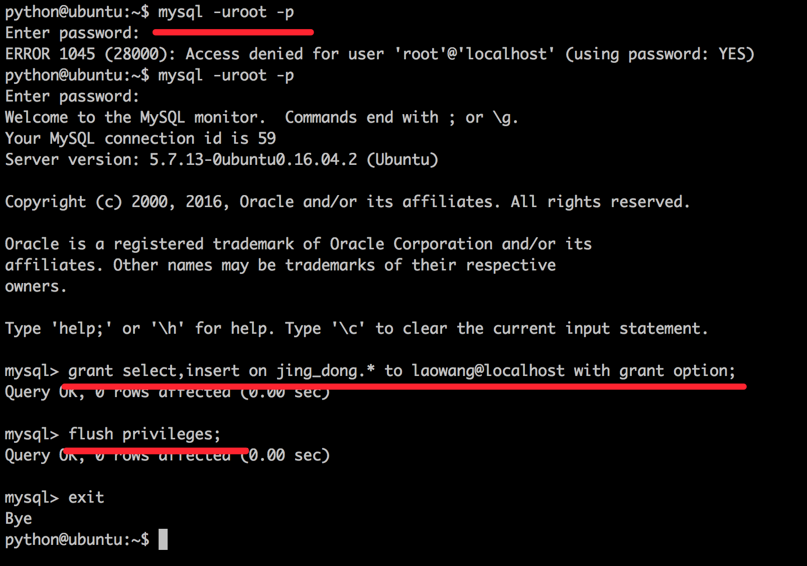
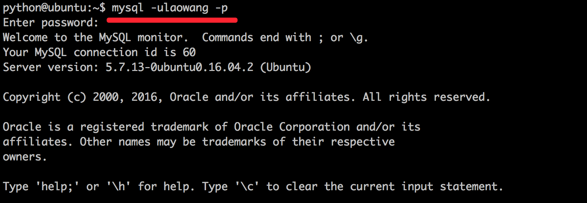
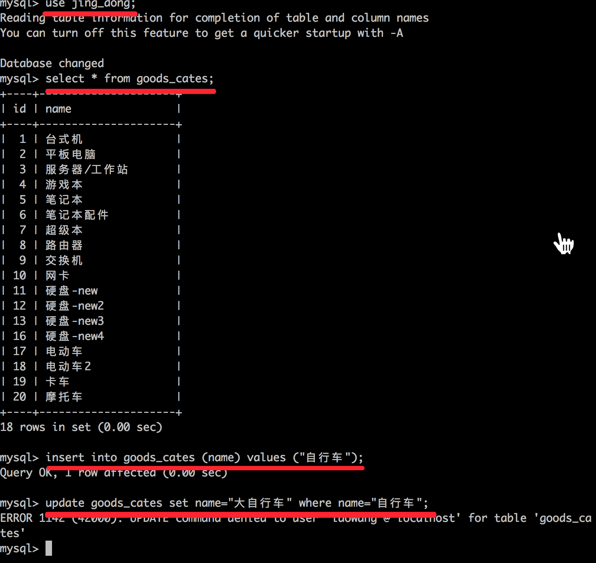
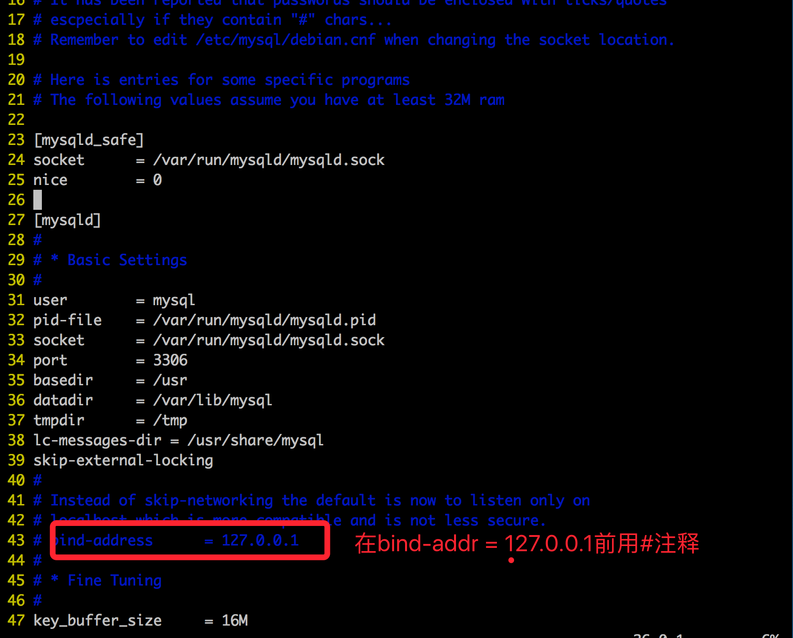
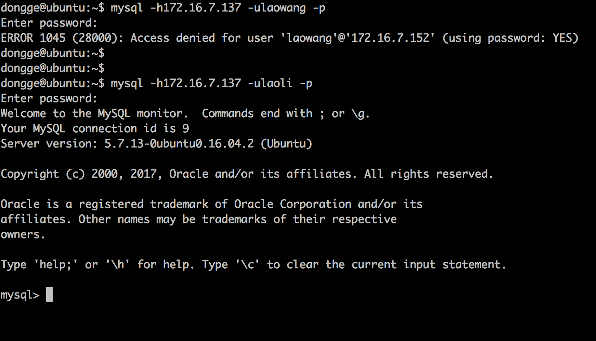

账户操作
1. 修改权限
grant 权限名称 on 数据库 to 账户@主机 with grant option;
  
2. 修改密码
使用root登录，修改mysql数据库的user表
使用password()函数进行密码加密
update user set authentication_string=password('新密码') where user='用户名'; 例： update user set authentication_string=password('123') where user='laowang';注意修改完成后需要刷新权限
刷新权限：flush privileges
3. 远程登录（危险慎用）
如果向在一个Ubuntu中使用msyql命令远程连接另外一台mysql服务器的话，通过以下方式即可完成，但是此方法仅仅了解就好了，不要在实际生产环境中使用
修改 /etc/mysql/mysql.conf.d/mysqld.cnf 文件
vim /etc/mysql/mysql.conf.d/mysqld.cnf

然后重启msyql
service mysql restart
在另外一台Ubuntu中进行连接测试

如果依然连不上，可能原因：
1) 网络不通
通过 ping xxx.xxx.xx.xxx可以发现网络是否正常
2)查看数据库是否配置了bind_address参数
本地登录数据库查看my.cnf文件和数据库当前参数show variables like 'bind_address';
如果设置了bind_address=127.0.0.1 那么只能本地登录
3)查看数据库是否设置了skip_networking参数
如果设置了该参数，那么只能本地登录mysql数据库
4)端口指定是否正确
4. 删除账户
- 语法1：使用root登录
drop user '用户名'@'主机';
例：
drop user 'laowang'@'%';
- 语法2：使用root登录，删除mysql数据库的user表中数据
delete from user where user='用户名';
例：
delete from user where user='laowang';
-- 操作结束之后需要刷新权限
flush privileges
- 推荐使用语法1删除用户, 如果使用语法1删除失败，采用语法2方式
3. 忘记 root 账户密码怎么办 !!
- 一般也轮不到我们来管理 root 账户,所以别瞎卖白粉的心了
- 万一呢? 到时候再来查http://blog.csdn.net/lxpbs8851/article/details/10895085